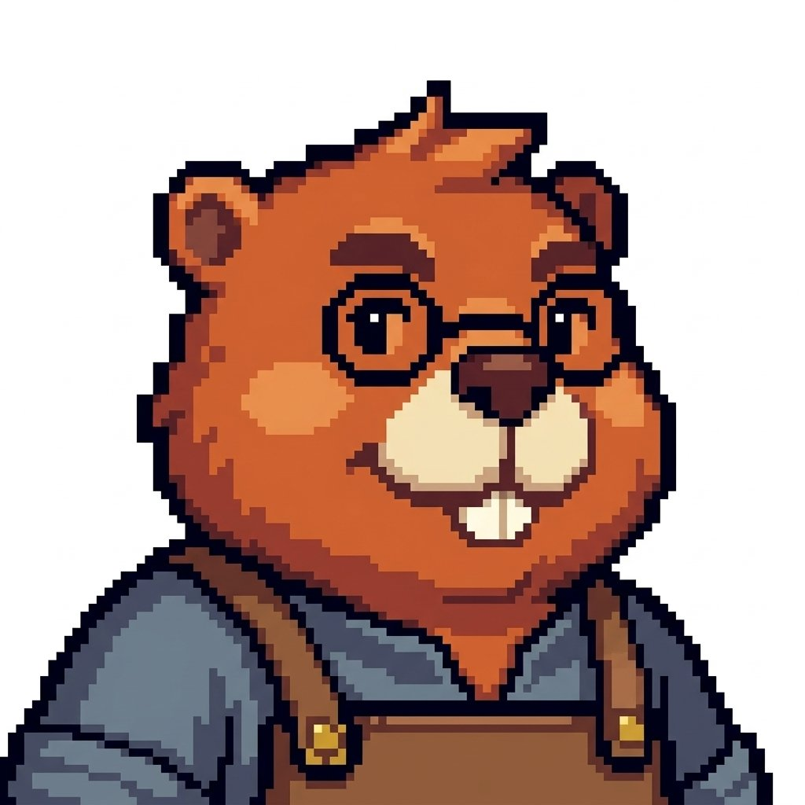
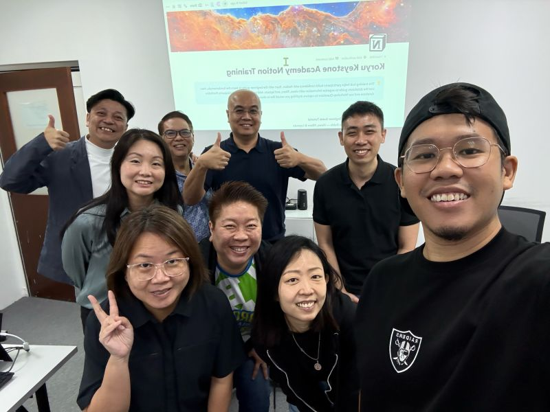

More than another workshop.
Beaver Guild is built for people who want to do more than attend another workshop. Starting with Notion, the approach brings together practical learning, real problems and mentored teaching.
Members can develop their craft as practitioners, while those who want to teach can work towards it through supported practice and feedback. The aim is progress people can demonstrate, not just a record of attendance.
The long-term aim is a guild of capable practitioners and trainers who share what they know and develop others in turn.

What we hold to.
Craft before spectacle
Show useful work and explain the choices behind it.
Purpose before tools
Start with the person and problem, not an automation to sell.
Progress through practice
Make room to build, test, receive feedback and improve.
Capability shared
Help people become more independent and develop others in turn.
Warm, credible guidance
Be welcoming without becoming childish; confident without exaggeration.
Why a beaver, and why a guild?
Beaver expresses practical, resourceful building. Guild expresses shared craft, mentoring and belonging. It describes the ambition of the organisation, not a claim about the size of the team today.

Nasri Nasir
Beaver Guild is being developed by Nasri Nasir, a Notion Ambassador, trainer and consultant. His Notion workshops and train-the-trainers work provide the starting point for the guild’s first learning pathway.
Beaver Guild is an independent initiative. Nasri’s personal Notion credentials do not imply accreditation or endorsement of its programmes.